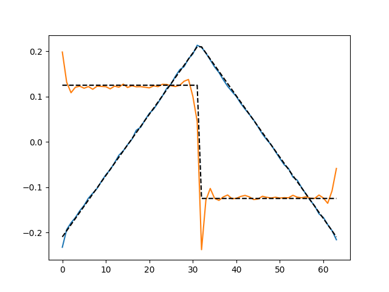

Note
Click here to download the full example code
Vanilla CSC on simulated data#
This example demonstrates vanilla CSC on simulated data. Note that vanilla CSC is just a special case of alphaCSC with alpha=2.
# Authors: Mainak Jas <mainak.jas@telecom-paristech.fr>
# Tom Dupre La Tour <tom.duprelatour@telecom-paristech.fr>
# Umut Simsekli <umut.simsekli@telecom-paristech.fr>
# Alexandre Gramfort <alexandre.gramfort@telecom-paristech.fr>
#
# License: BSD (3-clause)
Let us first define the parameters of our model.
n_times_atom = 64 # L
n_times = 512 # T
n_atoms = 2 # K
n_trials = 100 # N
n_iter = 50
reg = 0.1
Here, we simulate the data
Add some noise and corrupt some trials
from scipy.stats import levy_stable # noqa
from alphacsc import check_random_state # noqa
# Add stationary noise:
fraction_corrupted = 0.02
n_corrupted_trials = int(fraction_corrupted * n_trials)
rng = check_random_state(random_state_simulate)
X += 0.01 * rng.randn(*X.shape)
idx_corrupted = rng.randint(0, n_trials,
size=n_corrupted_trials)
Let us look at the first 10 trials to see how they look.
from alphacsc.viz.callback import plot_data # noqa
plot_data([X[:10]])
Note that the atoms don’t always have the same amplitude or occur at the same time instant.
Now, we run vanilla CSC on the data.
Out:
V_0/50 .................................................
Vanilla CSC
Finally, let’s compare the results.
Out:
[<matplotlib.lines.Line2D object at 0x7f7be449f040>, <matplotlib.lines.Line2D object at 0x7f7be449f310>]
We can also visualize the learned activations
plot_data([z[:10] for z in z_hat], ['stem'] * n_atoms)
Note if the data is corrupted with impulsive noise, this method may not be the best. Check out our example using alphacsc to learn how to deal with such data.
alpha = 1.2
noise_level = 0.005
X[idx_corrupted] += levy_stable.rvs(alpha, 0, loc=0, scale=noise_level,
size=(n_corrupted_trials, n_times),
random_state=random_state_simulate)
pobj, times, d_hat, z_hat, reg = learn_d_z(
X, n_atoms, n_times_atom, reg=reg, n_iter=n_iter,
solver_d_kwargs=dict(factr=100), random_state=random_state,
n_jobs=1, verbose=1)
plt.figure()
plt.plot(d_hat.T)
plt.plot(ds_true.T, 'k--')
plt.show()
Out:
V_0/50 .................................................
Total running time of the script: ( 0 minutes 21.385 seconds)